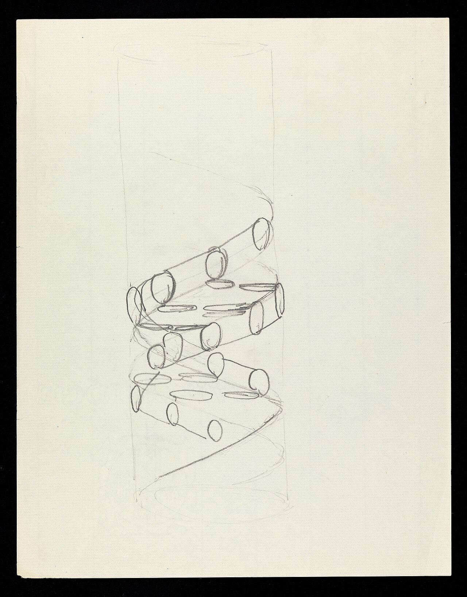
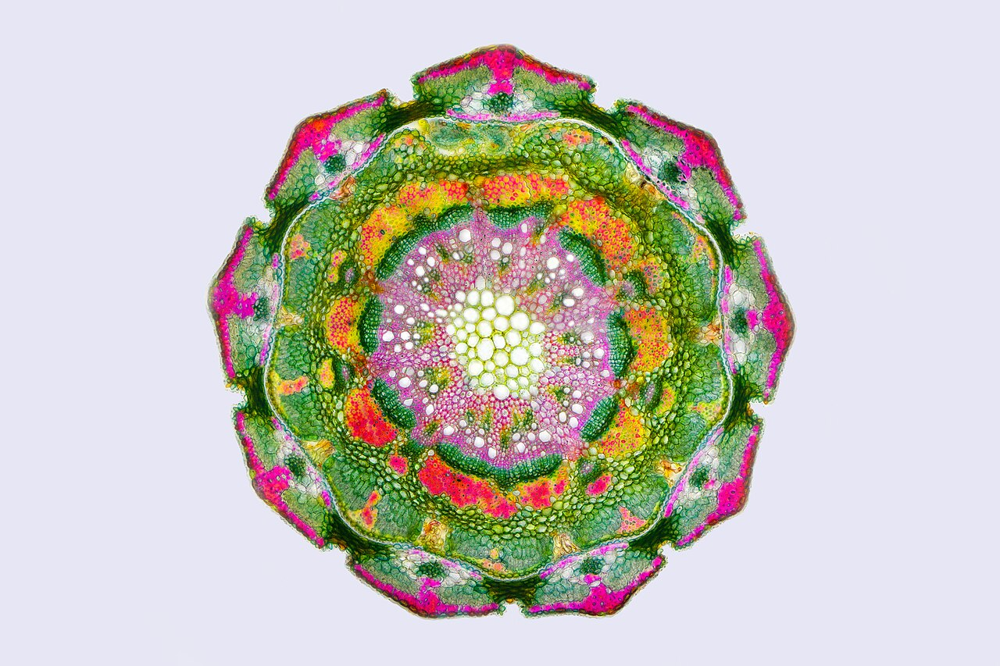
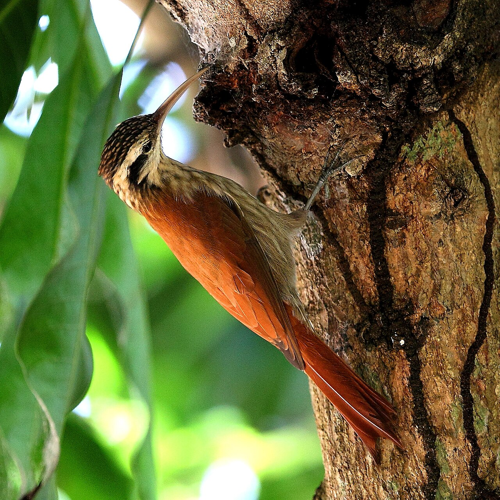
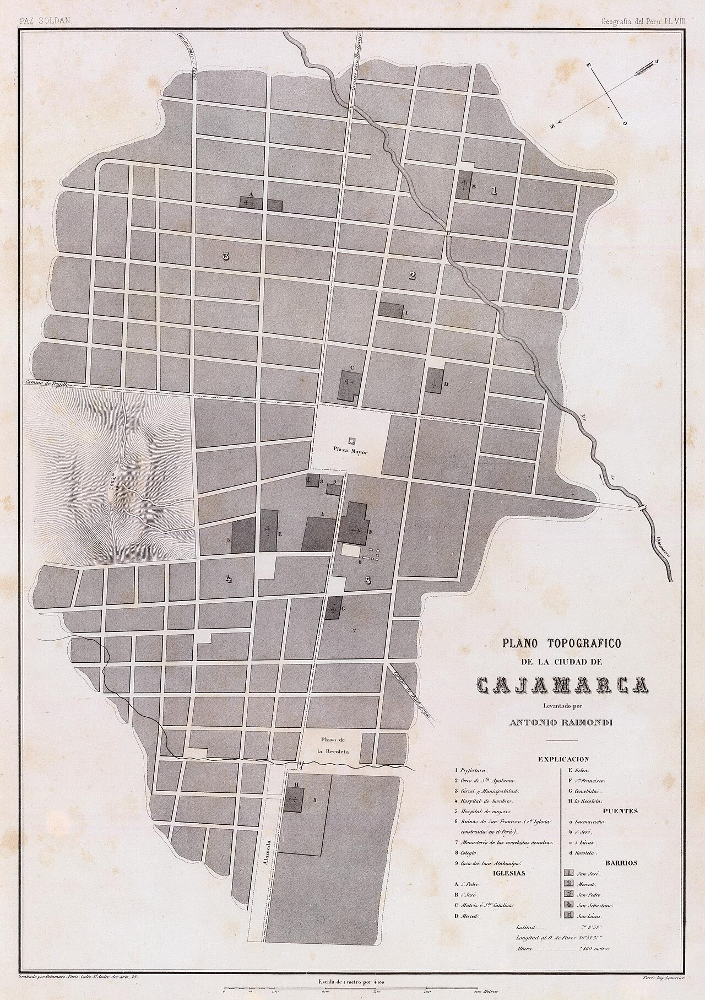

Lula.
diario de la mañana — el mundo, tu ciudad y lo que te asombra
Buen día, lunes. Día nublado y templado: de 19° a 27°. Con la lluvia las fuentes no se ponen de acuerdo —La Nación la descarta para la Ciudad, Canal 26 la pone desde las 16—, así que llevá paraguas y no te enojes con nadie. La ciencia de hoy es un ejercicio de lectura crítica distinto a los que veníamos haciendo: no un paper, sino un anuncio de empresa, y cómo se lee cuando no hay revisión por pares.
- El mundo en cinco minutos3'
- Argentina y Buenos Aires2'
- Ciencia: AlphaGenome 27'
- Mirá a tu alrededor2'
- Receta de estación2'
- La palabra del día1'
- Le français du matin2'
- English corner3'
- Lunes de arte: Macciò4'
- Hoy en la historia · un lugar2'
- Lo que me asombra hoy1'
- Pasatiempo: sudoku fácil10'
- Cuaderno: repaso, quiz y escritura4'
Xi, Trump y Putin se reúnen el jueves en Shenzhen
China confirmó que los tres presidentes se van a ver el jueves en Shenzhen, con el control de armas nucleares en la agenda, aprovechando que la ciudad recibe la cumbre de APEC el 18 y el 19. Ya están llegando los jefes de Estado; entre ellos, la presidenta mexicana Claudia Sheinbaum, que además tiene una bilateral con Xi.
Por qué importa: hace décadas que no hay una mesa de los tres juntos sobre armas nucleares. El andamiaje de tratados que ordenó la Guerra Fría se cayó pieza por pieza, y China —que nunca formó parte de esos acuerdos bilaterales— hoy tiene arsenal suficiente para que cualquier esquema nuevo la incluya.
Manila, y un ataque con drones en Baréin
La cumbre de líderes de la ASEAN sesiona en Manila con los efectos económicos de la guerra entre Estados Unidos e Irán de fondo. Y en el Golfo, Irán afirmó haber atacado con drones una base estadounidense en Baréin —sede de la Quinta Flota— con la advertencia de que no va a esperar otro ataque.
Por qué importa: son la misma historia vista de los dos lados. El sudeste asiático discute cómo absorber el costo económico de un conflicto que no empezó; el Golfo, cómo no quedar adentro del siguiente.
Y además: los cancilleres de la UE tratan hoy el apoyo a Ucrania de cara al invierno · un incendio en Phuket, Tailandia, dejó 11 muertos · Japón publicó su primera estimación del PBI del trimestre.
Lo que esperan los que ponen plata
Después del 2,2 % del jueves, las consultoras ajustaron. Del REM del Banco Central y de los informes privados sale esto: inflación cerca del 30 % anual para 2026 y crecimiento del 0,7 %, prácticamente nulo. JP Morgan espera inflación cerca del 2 % mensual hasta las elecciones de 2027 y marca al dólar como el punto a vigilar; Econviews proyecta 1,8 % para noviembre.
Cómo leerlo: «2 % mensual» suena bajo cuando venís de tres cifras, y es alto: compuesto doce veces da casi 27 % anual. El problema del 2 % no es el salto, es que no baja más. Y un crecimiento de 0,7 % significa que la economía está donde estaba: lo que mejora un sector lo pierde otro.
En el Congreso: el Gobierno impulsa suspender las PASO sin tener los votos asegurados, y la oposición pidió informes por la contratación de dos empresas vinculadas a los Menem en los eventos de la visita papal.
Para hacer en la ciudad
- «Rómulo Macciò. La pintura como destino», en el Bellas Artes (Libertador 1473). Más de cincuenta obras de 1960 a 2016, hasta el 14 de febrero. Entrada gratuita, y es la antológica que faltaba hace casi veinte años.
- En el mismo museo, «Goya en Buenos Aires», con visitas guiadas.
- «Océano interior», la experiencia inmersiva del Museo Moderno por sus 70 años (Av. San Juan 350).
AlphaGenome 2, y cómo se lee un anuncio que no es un paper
De qué estamos hablando: del 98 % del genoma humano que no codifica proteínas. Ahí están los promotores, los enhancers, los sitios de splicing y la mayor parte de las variantes que los estudios de asociación (GWAS) vinculan con enfermedades. El problema práctico es viejo y muy concreto: secuenciás a un paciente, encontrás una variante en una región no codificante y no sabés si hace algo. AlphaGenome es el intento de DeepMind de contestar eso con un modelo de secuencia.

Quién es quién
- Variante no codificante: un cambio de base fuera de un exón. No altera la proteína; altera cuánto, cuándo y en qué célula se expresa el gen vecino —o uno lejano—.
- Modelo de secuencia: una red neuronal que toma ADN crudo como entrada y predice señales experimentales —expresión, accesibilidad de cromatina, unión de factores de transcripción, splicing— que normalmente se miden con RNA-seq, ATAC-seq o ChIP-seq. Predice el experimento, no la enfermedad.
- Recall de variantes causales: de todas las variantes que de verdad causan el efecto, cuántas el modelo pone arriba en su ranking. Es la métrica que importa en diagnóstico, porque lo que se busca es no perderse la que importa.
- TenK10K: un conjunto de datos de células inmunes de muchísimos donantes con expresión medida célula por célula. Sirve de banco de pruebas porque ahí se sabe —razonablemente— qué variante afecta a qué.
Qué anunciaron
- AlphaGenome 2, presentado el 11 de noviembre, predice el efecto de variantes a nivel de cientos de tipos celulares, no de tejido entero. Es el salto conceptual: una variante puede hacer una cosa en un linfocito T y nada en un hepatocito.
- Sobre TenK10K, DeepMind reporta aproximadamente el doble de recall de variantes causales que el modelo anterior: 30 % contra 16 %.
- Viene después del AlphaGenome Atlas (septiembre), que precalculó el efecto molecular de los 9.000 millones de cambios de una sola letra posibles en el genoma humano, con un puntaje para ordenarlos.
- El modelo original sí tiene paper revisado: Nature, enero de 2026, con estado del arte en 22 de 24 tareas de predicción de señales y 25 de 26 de efecto de variantes.
Lectura crítica
- Esto no es un paper. La versión 2 se anunció en el blog de la empresa, con un preprint propio y sin revisar detrás, y hasta ahora no hay ninguna evaluación independiente. No es lo mismo que el trabajo de enero, que pasó por revisión. La diferencia no es formalismo: el benchmark lo eligió la misma empresa que reporta el resultado.
- 30 % de recall es mucho mejor que 16 % y sigue siendo 30 %. Dicho de otro modo: el modelo se pierde siete de cada diez variantes causales. Para priorizar candidatos en investigación, sirve; para decirle algo a un paciente, no.
- Predecir una señal no es entender un mecanismo. El modelo acierta qué le pasaría a la cromatina; no te dice por qué, ni reemplaza el experimento que valida. La trampa es tratar la salida del modelo como un dato medido.
- Y lo dicen ellos: el Atlas no está validado ni aprobado para ningún uso clínico. Conviene citarlo así cuando alguien te mande la nota del diario.
La conexión con lo que estudiás
Esto es bioinformática de tercer año puesta en el centro del negocio. Dos cosas para llevarse. Una: el cuello de botella de la genómica ya no es secuenciar —eso es barato y rápido— sino interpretar. Un exoma te devuelve decenas de miles de variantes y el trabajo real es el filtrado. Dos: cuidado con confundir correlación aprendida con causalidad. Un modelo entrenado sobre datos experimentales aprende las regularidades de esos datos, incluidos sus sesgos: si una región del genoma está poco representada en los experimentos de origen, el modelo va a ser malo ahí y no te lo va a avisar.
AlphaGenome 2: anuncio de Google DeepMind, 11 de noviembre de 2026 (sin revisión por pares). El modelo original, revisado: «Advancing regulatory variant effect prediction with AlphaGenome», Nature, enero de 2026, doi:10.1038/s41586-025-10014-0.
Biotec en el mundo real · Bitgenia
El problema de interpretar variantes es exactamente el negocio de Bitgenia, una empresa argentina de bioinformática aplicada al diagnóstico genómico, nacida con un subsidio del Ministerio de Ciencia y con software desarrollado junto a un grupo de genómica de la UBA.
- Qué venden: exoma completo —los cerca de 20.000 genes codificantes— y paneles virtuales: se secuencia todo el exoma pero se analizan solo los genes relevantes para la sospecha clínica, lo que baja el costo y, sobre todo, el ruido.
- La plataforma: B-platform, el software donde corre el filtrado y la anotación. Esa capa —no la secuenciación— es donde está el valor agregado.
- Los números que declaran: más de 5.000 pacientes estudiados en el país, más de 50 patologías y una eficiencia diagnóstica superior al 47 %. Son cifras de la propia empresa, sin verificación independiente; aun así, ese orden de magnitud es el habitual en exoma clínico.
- Salida laboral: esto es el puesto de «analista de variantes»: bioinformática, genética clínica, bases de datos de variantes (ClinVar, gnomAD) y normas de clasificación. Es de los trabajos con más demanda y menos gente formada en la región.
Ciencia en la vida cotidiana · Por qué un informe genético puede decir «no sé»
Las variantes se clasifican en cinco categorías, de patogénica a benigna, y en el medio está la que arruina las reuniones: la VUS, variante de significado incierto. No quiere decir «es media peligrosa»: quiere decir que no hay evidencia suficiente para ubicarla en ningún lado. Y son frecuentísimas, sobre todo en poblaciones poco representadas en las bases de datos, que es casi todo el mundo salvo Europa.
Lo que cambia con el tiempo: una VUS puede reclasificarse años después, cuando aparecen más casos. Por eso un informe genético tiene fecha y conviene revisarlo: no es un resultado de laboratorio que vale para siempre, es una interpretación con el estado del conocimiento de ese día.
La casuarina, que no es un pino, y el chinchero chico




El árbol: casuarina
| Nombre científico | Casuarina (Casuarináceas). Australiana. En Buenos Aires está en plazas, countries y sobre todo en la costa: en Mar del Plata y en toda la provincia se plantó como cortina rompeviento. |
|---|---|
| Cómo reconocerla | Parece un pino y suena distinto: el viento entre las ramas hace un silbido largo, continuo, que no hace ninguna conífera. Mirá de cerca una «aguja»: no es una hoja, es una ramita verde articulada, con las hojas verdaderas reducidas a dientecitos diminutos en cada nudo. El fruto parece una piña chiquita y leñosa, pero no lo es. |
| Lo asombroso | Es una angiosperma disfrazada de conífera, y encima fija nitrógeno: forma nódulos en la raíz con Frankia, una bacteria filamentosa del grupo de los actinomicetes. O sea: hace lo mismo que la soja con el rizobio, pero con otro socio y en un árbol. Esa es la razón por la que crece en arena pura, donde nada más agarra, y por la que se usó para fijar médanos en toda la costa. |
El ave: chinchero chico
| Nombre científico | Lepidocolaptes angustirostris (Furnáridos, la familia del hornero). Pardo claro, con la cabeza y el pecho estriados de blanco, y un pico largo, fino y curvado hacia abajo. |
|---|---|
| Cómo reconocerlo | Por la postura: se pega al tronco en vertical, apoyado en la cola rígida, y sube a saltitos en espiral alrededor del árbol, sondeando las grietas de la corteza. Cuando llega arriba, baja volando a la base del árbol siguiente y vuelve a empezar. Está en parques arbolados de la ciudad. |
| Lo asombroso | Esa manera de trepar la inventaron por separado los trepadores del hemisferio norte (Certhia), los trepatroncos americanos y los Climacteris australianos, que no son parientes cercanos entre sí. Las tres familias tienen la cola rígida haciendo de trípode y el pico curvo. Es convergencia: el tronco de un árbol es un problema con pocas soluciones buenas. |
Misión de la semana
Flan casero, sin que le salgan agujeros
Cinco ingredientes y una sola regla: no pasarse de temperatura.
Ingredientes
- 4 huevos enteros + 2 yemas
- 500 ml de leche entera
- 100 g de azúcar, 1 cucharadita de esencia de vainilla
- Para el caramelo: 120 g de azúcar y 2 cucharadas de agua
Pasos
- Caramelo: azúcar y agua a fuego medio, sin revolver, hasta color ámbar. Volcá en la budinera y girala.
- Entibiá la leche. Batí los huevos con el azúcar sin hacer espuma.
- Agregá la leche tibia en hilo, mezclando. Colá.
- A baño María, horno 150°, 50-60 minutos. Está listo cuando el centro tiembla apenas.
- Heladera, mínimo 4 horas, mejor toda la noche.
La química de la receta
Qué es un flan: un gel proteico. Al calentarse, las proteínas del huevo —ovoalbúmina, ovotransferrina, livetinas de la yema— se desnaturalizan, exponen los residuos hidrofóbicos que tenían escondidos y se agregan entre sí formando una red tridimensional que atrapa el agua de la leche. La ovotransferrina empieza alrededor de los 60 °C y la ovoalbúmina cerca de los 80 °C; el azúcar sube esas temperaturas, porque compite por el agua y estabiliza la proteína plegada. Por eso un flan dulce coagula más tarde que un huevo revuelto.
Y los agujeros: son la marca de que te pasaste. Si la mezcla llega cerca de los 100 °C, el agua hierve dentro del gel ya formado y las burbujas quedan atrapadas; además la red se contrae de más y suelta líquido —sinéresis, otra vez—. El baño María no está para «cocinar suave» por capricho: el agua no pasa de 100 °C y la inercia térmica amortigua los picos del horno. Horno bajo, baño María y sacarlo temblando. Un flan perfecto es un flan apenas crudo.
figura sustantivo
latín fingere (modelar en barro, dar forma) → figura → castellano figura · francés figure · inglés figure
El verbo latino fingere no significaba mentir: significaba modelar con las manos, como hace un alfarero. De ahí salen, por un lado, «figura» y «efigie»; por otro, «ficción» y «fingir». La misma raíz produjo la palabra para la forma visible de algo y la palabra para lo inventado, y eso dice bastante sobre lo que los romanos pensaban del arte.
La «figuración» de la que habla la pintura de hoy —y la «Nueva Figuración» de Macciò y sus amigos— usa el término en el sentido más viejo: pintar figuras, cosas reconocibles, en una época en la que la abstracción había ganado. Volver a la figura, en 1961, era una provocación. Y en francés, figure terminó significando directamente «cara», que es la figura por excelencia.
J'aime beaucoup
— Tu aimes la peinture ?
— Oui, j'aime beaucoup. Et toi ?
— Moi, je préfère la danse.
| j'aime / je n'aime pas | me gusta / no me gusta [shem / she nem PA] |
|---|---|
| j'aime beaucoup | me gusta mucho [shem bo-KÚ] |
| je préfère | prefiero [she pre-FER] |
| la peinture / la danse | la pintura / la danza [la pan-TÜR / la DANS] |
Un truco
Después de aimer va el artículo definido, siempre: j'aime la peinture, j'aime le café. En castellano decimos «me gusta el café» igual, así que esta vez te sale gratis; en inglés no (I like coffee). Y ojo con aimer a secas con una persona: je t'aime es «te amo», no «me caés bien». Para eso se dice je t'aime bien: el bien, contra toda lógica, enfría la frase.
Three at a table
That the leaders of China, Russia and the United States will sit down together this week to talk about nuclear weapons is, by the standards of the past decade, remarkable in itself. The architecture built up over fifty years to keep arsenals in check has been dismantled treaty by treaty, and little has been put in its place. Talks are not a substitute for an agreement, but they are a precondition for one.
What makes this round genuinely new is the third chair. The old arrangements were bilateral by design: two superpowers counting each other's warheads. China declined to join on the reasonable grounds that its arsenal was a fraction of theirs. That argument has worn thin, and any framework that leaves it out now would be an exercise in nostalgia.
Expectations should be kept low. Verification is the hard part, and it is where previous efforts foundered: states will trade numbers readily enough but balk at inspectors. Still, a meeting that produces nothing but a channel is worth more than the silence it replaces.
- to keep something in check — mantener algo a raya
- to dismantle — desmantelar
- a precondition — una condición previa
- on the grounds that — con el argumento de que
- to wear thin — desgastarse, dejar de convencer
- an exercise in nostalgia — un ejercicio de nostalgia
- to founder — irse a pique, fracasar
- to balk at — resistirse a, echarse atrás ante
Macciò, el pintor que fue muchos pintores
El Bellas Artes abrió el 6 de noviembre «Rómulo Macciò. La pintura como destino»: más de cincuenta obras de 1960 a 2016, la primera antológica suya en casi veinte años. Está hasta el 14 de febrero y es gratis. Macciò (1931-2016) era porteño, autodidacta, y había empezado trabajando en publicidad.
El grupo
En 1961 se juntó con Ernesto Deira, Jorge de la Vega y Luis Felipe Noé en lo que llamaron Otra Figuración —después conocido como Nueva Figuración—. Duró poco, dos o tres años según quién cuente, y cambió la pintura argentina. La idea era simple y a contrapelo de la época: volver a pintar figuras cuando el buen gusto internacional mandaba abstracción, pero sin volver al realismo. Figuras deshechas, chorreadas, mordidas por la materia. El Bellas Artes, que había presentado al grupo en 1963, es el lugar exacto donde cerrar el círculo.
Cómo mirarlo
Macciò es difícil de reconocer de una sala a la otra, y eso es el tema de la muestra: parece varios pintores distintos. Tres cosas para buscar:
- El gesto contra el dibujo. En las obras de los sesenta la figura aparece y se deshace en el mismo movimiento: hay chorreados, manchas, zonas sin resolver. No es descuido; es dejar visible el tiempo de la pintura.
- El vacío. Más adelante aparecen grandes superficies planas y una figura chiquita perdida adentro. La pintura pasa a ser sobre el espacio que sobra.
- El título. Macciò titulaba con ironía, y conviene leer los cartelitos: muchas veces el título es la mitad de la obra.
Es raro que un museo arme una antológica alrededor de la inconsistencia de alguien. La apuesta acá es que esa es, precisamente, la obra.
16 de noviembre de 1532: Cajamarca
Francisco Pizarro había llegado a Cajamarca el día anterior con una tropa que las fuentes cuentan entre 168 y 200 hombres. Atahualpa, que venía de ganar una guerra civil contra su hermano y tenía decenas de miles de soldados acampados afuera, aceptó entrar a la plaza con una comitiva de varios miles, desarmada, a un encuentro que entendía como protocolar. Los españoles estaban escondidos en los edificios que rodeaban la plaza, con las armas listas y la orden de no moverse hasta la señal.
Lo que siguió no fue una batalla: fue una emboscada contra gente sin armas, en un espacio cerrado, con caballos y arcabuces. Atahualpa quedó prisionero en pocos minutos y el imperio más grande de América quedó, de un día para el otro, sin cabeza.
Las cifras varían mucho según la fuente, y casi todas las que tenemos son de los propios conquistadores. Eso también es parte del dato.
El lugar: Cajamarca

| Dónde | En la sierra norte del Perú, a 2.750 metros. Era un centro administrativo inca con baños termales, donde Atahualpa estaba descansando con su ejército después de la guerra. |
|---|---|
| Qué queda | El Cuarto del Rescate: la habitación donde, según el relato, Atahualpa ofreció llenar el cuarto de oro una vez y de plata dos veces a cambio de su libertad. Cumplió, y lo ejecutaron igual, en 1533. Es la única construcción inca que sigue en pie en la ciudad. |
El azul costaba más que el oro
Hasta el siglo XIX, el azul más intenso que podía usar un pintor europeo se llamaba ultramar —«de más allá del mar»— y salía de una sola piedra, el lapislázuli, extraído de unas minas en las montañas de Badajshán, en el actual Afganistán. Eran prácticamente las únicas del mundo conocido. El pigmento es la lazurita, un aluminosilicato cuyo color no viene de un metal de transición como en casi todos los pigmentos, sino de iones de azufre atrapados dentro de la jaula cristalina: el radical S₃⁻, que absorbe en el rojo y deja pasar el azul.
Molerlo no alcanzaba: así queda gris. Había que amasar el polvo con cera y resina, meterlo en una bolsa y lavarlo varias veces en agua con lejía, y recién ahí salía el azul. Ese trabajo sobre una piedra traída en caravana desde Asia central explica el precio: en los contratos del Renacimiento el ultramar se pagaba aparte, por onza, y a veces más caro que el oro. Por eso se lo reservaban para el manto de la Virgen: no solo por simbolismo, sino porque era lo más caro del cuadro.
En 1826 el químico francés Jean-Baptiste Guimet sintetizó el mismo compuesto calentando caolín, carbonato de sodio y azufre, a una fracción del precio. El azul dejó de ser un lujo y pasó a ser una decisión estética: desde entonces, cuando alguien usa mucho azul, dice algo distinto de lo que decía antes.
El del lunes
Repaso y quiz de la mañana
Repaso de idiomas
Quiz
Un modelo como AlphaGenome predice, en rigor…
«Recall de 30 %» quiere decir que el modelo…
Una VUS en un informe genético es…
La casuarina fija nitrógeno asociándose con…
Los agujeros del flan aparecen porque…
El color del ultramar natural viene de…
Escritura
- Quiz: señales experimentales · se pierde siete de cada diez · variante sin evidencia suficiente · Frankia · se pasó de temperatura · iones de azufre.
- Repaso: ma mère · j'ai beaucoup de travail · j'aime beaucoup · salir de garante de · llegar por fin a hacer algo · desgastarse o dejar de convencer.
- Francés: por ejemplo, «J'aime la peinture, j'aime le café et j'aime beaucoup la danse. Je n'aime pas le froid.»
Sudoku:
Fuentes de esta edición
- Mundo: agenda de agencias del día
- Economía: JP Morgan y el dólar · las proyecciones para 2026
- Clima: La Nación, con datos del SMN · Canal 26, que anuncia lluvia
- Ciencia: el anuncio de AlphaGenome 2 · el paper revisado de AlphaGenome en Nature · Bitgenia
- Arte e historia: Infobae sobre la antológica de Macciò · agenda del Bellas Artes · Cajamarca, 1532
Mañana, martes: moda. — Lula.